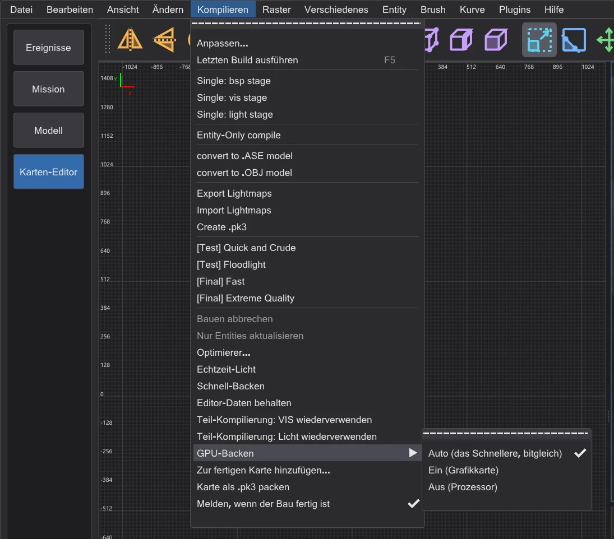
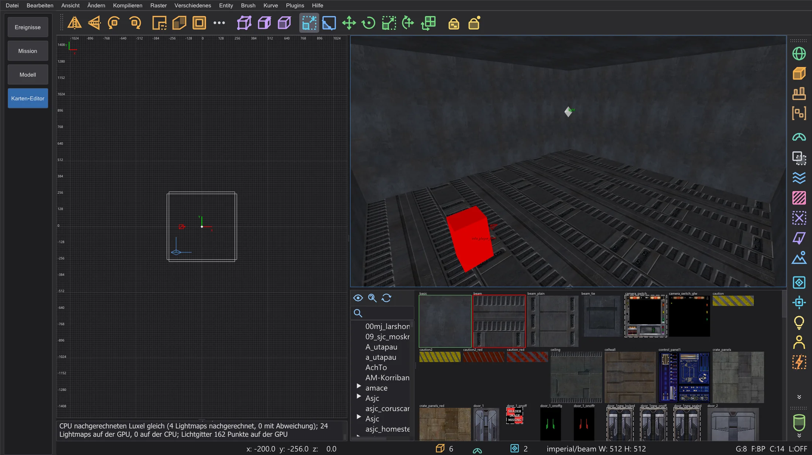

Karten-Editor: GPU-Backen
Das ganze Licht einer Karte auf der Grafikkarte rechnen - Lightmaps, Bounce und Lichtgitter -, Byte für Byte gleich wie auf der CPU und auf großen Karten viel schneller.
Kompilieren > GPU-Backen (nicht in NetRadiant-Custom) bestimmt, wo bhed_q3map2 das Licht jedes -light-Schritts rechnet: Auto (das Schnellere, bitgleich) (die Vorgabe), Ein (Grafikkarte) (Schalter -bhedgpubake) oder Aus (Prozessor). Die gebaute Karte ist Byte für Byte dieselbe - die Grafikkarte ist nur schneller. Die Wahl bleibt gespeichert (Einstellung BhedGpuBakeMode).
Auto (das Schnellere, bitgleich) nimmt die Grafikkarte nur, wenn ihr Ergebnis bitgleich ist (sie rechnet mit double) und sie voraussichtlich schneller ist: große Karten und Bounce-Runden. Kleine Karten und -samples 4 auf großen Karten bleiben auf dem Prozessor; eine Grafikkarte ohne double wird nie gewählt. Außerdem merkt sich Auto je Karte und Licht-Schaltern, wie lange der letzte Lauf auf dem Prozessor und auf der Grafikkarte gedauert hat, und nimmt danach das Schnellere (auch beim Schnell-Backen). Die Konsole nennt Wahl und Grund, zum Beispiel "GPU-Backen (Auto): Prozessor - wenig Lichtarbeit (34490 Super-Luxel)".

Während die Karte gebaut wird, nennen das Fortschrittsfenster und die Statuszeile die Grafikkarte. Nach dem Bau zeigt die Konsole den Abweichungsbericht: jede 64. Lightmap rechnet die CPU ein zweites Mal und vergleicht Luxel für Luxel. Der letzte Bericht steht auch im Tooltip von GPU-Backen. Das Schnell-Backen des Echtzeit-Lichts (Karten-Editor: Tempo und Echtzeit-Licht) nutzt bei eingeschaltetem Eintrag ebenfalls die Grafikkarte.

Was auf der Grafikkarte läuft#
- Lightmaps: für jeden Luxel der Beitrag jedes Lichts mit seinem Schattenstrahl, die Stil-Prüfung, das adaptive Nachabtasten von
-samples(auch mehrere Ebenen), der Filter von-filterund das Aufsummieren der Lichter in ihrer Reihenfolge. - Bounce (
-bounce): jede Runde, mit den Flächenlichtern, die die Radiosity erzeugt. - Lichtgitter (das Licht für Modelle und Spieler): jeder Gitterpunkt mit allen Lichtern.
- Auf dem Prozessor wie immer: Laden, die Lichtlisten, Vertexlicht, das Erzeugen der Bounce-Lichter, Nähte, Speichern und Schreiben der .bsp - und alles, was die Grafikkarte nicht genau kann (siehe unten).
Warum das Ergebnis gleich ist#
Grafikkarten rechnen gewöhnlich etwas anders als der Prozessor - darum geben GPU-Lightmapper anderswo leicht anderes Licht. bhed_q3map2 macht dieselben Rechnungen in derselben Reihenfolge wie q3map2 auf dem Prozessor:
- jede Rechnung wird genau wie auf dem Prozessor gerundet (kein zusammengefasstes Multiplizieren-Addieren); Divisionen werden in Ganzzahlen genau gerundet;
- q3map2 normalisiert Vektoren und zieht Wurzeln in doppelter Genauigkeit; die Grafikkarte entscheidet dasselbe gerundete Ergebnis mit besonders genauer float-Rechnung und in den seltenen knappen Fällen in doppelter Genauigkeit;
- die Schattenstrahlen laufen durch q3map2s eigenen Trace-Baum mit seinen Toleranzen, und das Nachabtasten folgt derselben Reihenfolge der Stempel wie der Prozessor;
- nichts wird in der Reihenfolge aufsummiert, in der Threads zufällig fertig werden - jeder Luxel addiert seine Lichter in der Reihenfolge der Liste.
Was die Grafikkarte nicht genau rechnen kann - Alpha-Schatten und Lichtfilter (sie brauchen die Textur), ein Wert außerhalb des sicheren Bereichs, ein nicht endliches Ergebnis -, rechnet für diese Lightmap (bzw. diesen Gitterpunkt) der Prozessor. Fällt die Grafikkarte während des Baus aus oder setzt Windows sie zurück, rechnet der Prozessor den Rest. Eine Lightmap, die nicht in den Grafikspeicher passt, wird in Teilen ihrer Lichtliste gerechnet.
Wie viel schneller#
Gemessen auf einem Notebook mit Intel i9-14900HX (32 Threads) und NVIDIA RTX 4070 Laptop GPU, der ganze -light-Schritt (Median aus drei Läufen). Der Prozessor nutzt alle 32 Threads; das GPU-Backen braucht den Prozessor weiter für die oben genannten Teile, darum ist der Gewinn auf großen Karten mit vielen Lichtern und Bounce-Runden am größten.
| Karte | Schalter | Prozessor | Grafikkarte | Gleiche Luxel |
|---|---|---|---|---|
| mp__duel1 | -fast -patchshadows -samples 2 -filter -bounce 8 | 1.8 s | 1.2 s | 100 % |
| mp__duel1 | -fast -patchshadows -samples 2 -filter | 0.4 s | 0.4 s | 100 % |
| mp__duel1 | -fast -patchshadows -samples 4 -filter -bounce 2 | 1.1 s | 0.8 s | 100 % |
| md_ch_ben | -fast -patchshadows -samples 2 -filter -bounce 8 | 2.5 s | 2.2 s | 100 % |
| md_ch_ben | -fast -patchshadows -samples 2 -filter | 1.7 s | 1.6 s | 100 % |
| md_ch_ben | -fast -patchshadows -samples 4 -filter -bounce 2 | 2.3 s | 2.1 s | 100 % |
| kejim_post | -fast -filter -super 2 | 8.5 s | 6.2 s | 100 % |
| kejim_post | -fast -filter -super 2 -bounce 2 | 48.8 s | 20.0 s | 100 % |
| kejim_post | -fast -filter -super 2 -samples 3 | 9.0 s | 7.3 s | 100 % |
| md_am_sith | -fast -patchshadows -samples 2 -filter -bounce 8 | 62.0 s | 31.3 s | 100 % |
| md_am_sith | -fast -patchshadows -samples 2 -filter | 31.7 s | 12.1 s | 100 % |
| md_am_sith | -fast -patchshadows -samples 4 -filter -bounce 2 | 52.9 s | 28.0 s | 100 % |
| duel_mygeeto | -fast -patchshadows -samples 2 -filter -bounce 8 | 74.3 s | 47.1 s | 100 % |
| duel_mygeeto | -fast -patchshadows -samples 2 -filter | 31.6 s | 16.6 s | 100 % |
| duel_mygeeto | -fast -patchshadows -samples 4 -filter -bounce 2 | 67.2 s | 101.3 s | 100 % |
-samples 4 (101 s gegen 67 s) - das tiefe Nachabtasten an vielen Schattenkanten verzweigt für jeden Luxel anders, und darin sind Grafikkarten langsam. Mit -samples 2 (Build-Menü) war jede gemessene Karte gleich schnell oder schneller.Für die Kommandozeile#
-bhedgpubake- das Licht auf der Grafikkarte (mit-light).-bhedgpubakeauto- das Schnellere von Prozessor und Grafikkarte, die Grafikkarte nur bitgleich;-bhedgpubakezeiten <CPU ms> <GPU ms>gibt die gemessenen Zeiten der letzten Läufe mit (0 = unbekannt).-bhedgpubakecheck N- jede N-te Lightmap rechnet auch die CPU (Vorgabe 64, bis eine Million Paare aus Licht und Luxel;1prüft alle,0keine). Der Bericht steht auch in<Karte>.bhedgpu.txt.-bhedgpuadapter Noder ein Teil des Namens - welche Grafikkarte (sonst die schnellste).
-bhedgpudxr mit -bhedgpu): es rechnet die Schattenstrahlen etwa doppelt so schnell, verfehlt aber ohne die Toleranzen von q3map2 etwa 0,15 % der Treffer und sieht die festen Teile des Trace-Baums nicht - und die Schattenstrahlen machen nur 7-8 % der Zeit eines GPU-Backens aus. Darum wird es zum Backen nicht genutzt.